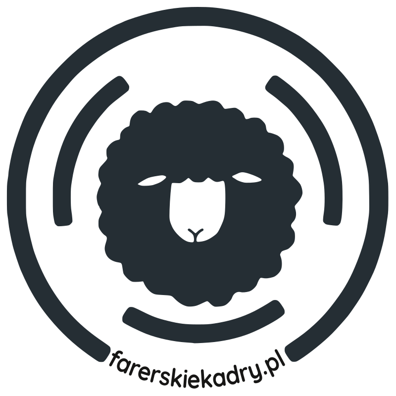

Pig farming has played only a small and now almost vanished role in Faroese agriculture. However, archaeology shows that pigs were much more important in the Viking era and early Middle Ages. Dozens of Faroese place‑names include elements like svín (pig), grísur (pig), súgv (sow), gøltur (hog) and purka (sow).
Hodowla świń to współcześnie nisza w farerskim rolnictwie. Znaleziska archeologiczne wskazują jednak, że w epoce wikingów i wczesnym średniowieczu świnie na Wyspach Owczych były znacznie ważniejsze. Mapy archipelagu wypełniają tuziny "świnkowych" śladów. Łatwo znajdziecie na nich słowa takie jak svín (świnia), grísur (świnia), súgv (locha), gøltur (wieprz) czy purka (locha).

ResearchOpracowanie: Maciej Brencz @ farerskiekadry.pl
DataDane: Umhvørvisstovan / foroyakort.fo
Maps rendered withMapy Leaflet, Stamen.
Licensed under Creative Commons Attribution.
Licencja Creative Commons Uznanie autorstwa.